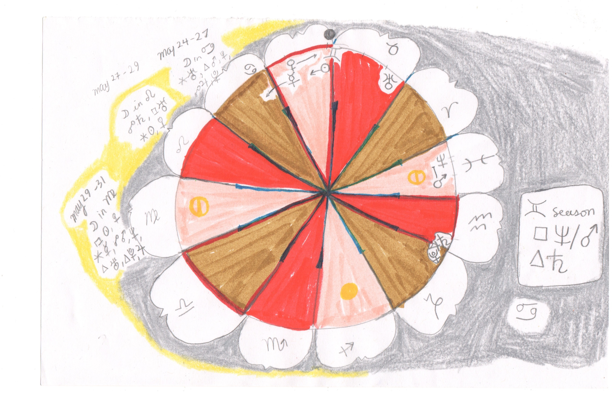
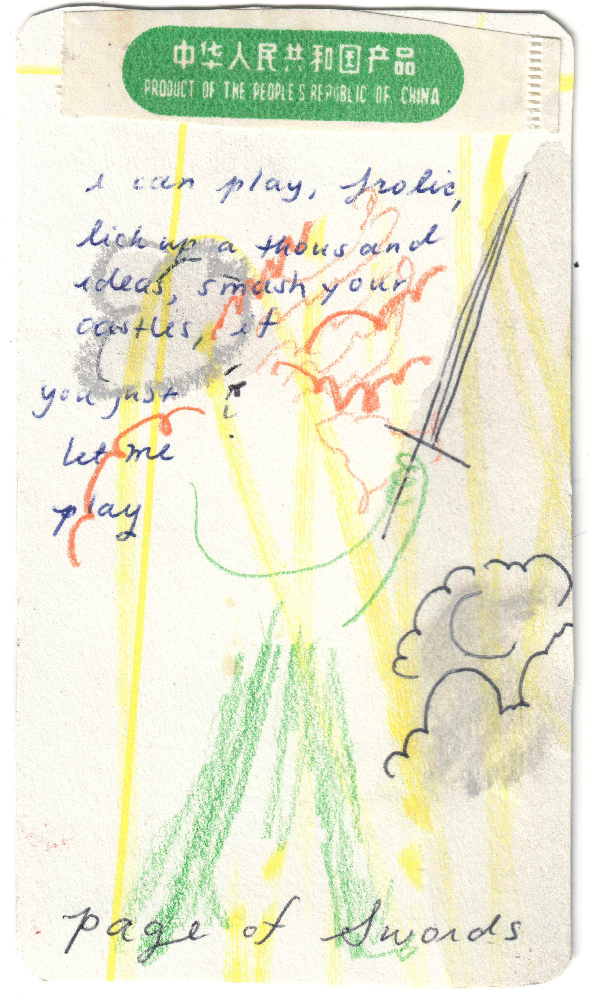
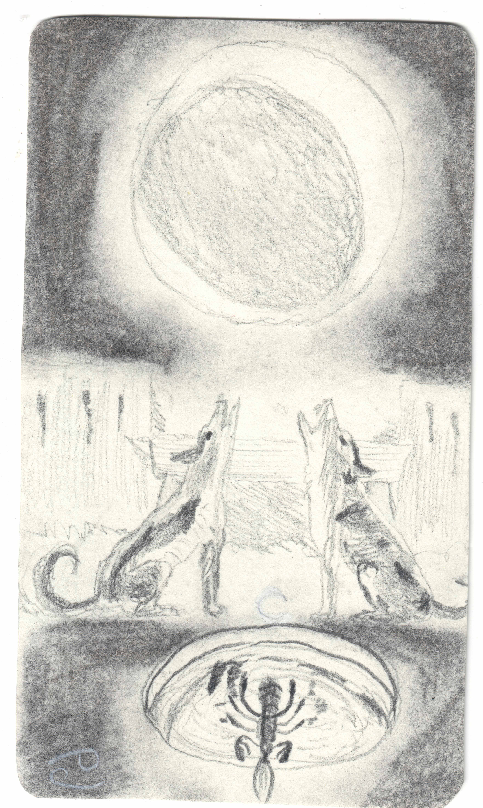
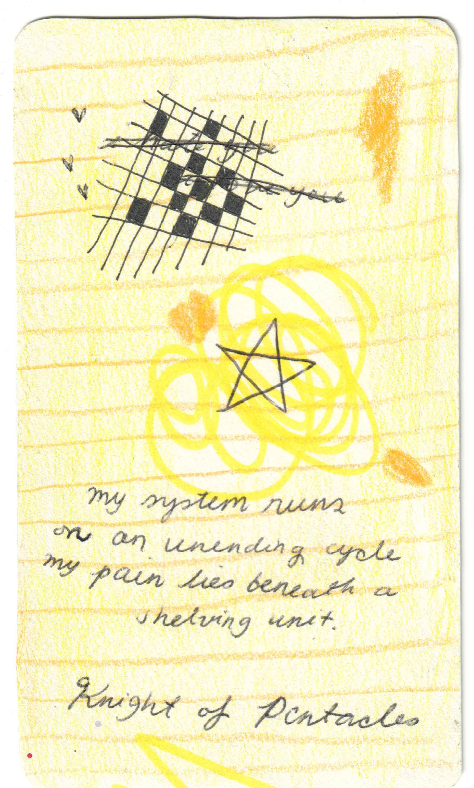

about me
I'm Emilia Wang, an astrologer and tarot reader. I started studying astrology on my own in 2015, and began to take classes and attend conferences over the past few years, organized by astrologers and groups such as Alice Sparkly Kat, Queer Astrology Conference, and Astrology University. I began my study of tarot in 2016, initiated by my friend and long-time collaborator Agustine Zegers.I write monthly horoscopes. You can read them on (substack

my approach
I believe in astrology as a tool for liberation.My relationship with astrology is a way to reclaim time and purpose, away from the Gregorian calendar, the 9 to 5 workweek, and hyper productivity. Astrology is a useful framework that shows we are all snapshots in the ever-evolving fractal of time.
I aim in each consultation space to help each client learn self-knowledge. In that self-knowledge is the knowledge about our communities, the rhythm of our social movements, our ecosystems, and our universe. I also believe astrological work can rescale the individual-collective axis and time continuums, that are sickened in United States and many capitalist societies.
As someone with the sun in the 6th house I've had many difficult learning experiences in defining myself through productivity and busy-ness, "project" after "project" that was never fully thought through but mindlessly churned out. As someone with the moon in the 8th, I've faced myself as I rushed through uncontrollable emotions from hatred and fear to love and over-idealization and back, and all of it occurring in self-sabotaging ways.
The 6th and 8th house are traditionally considered by astrologers to be "bad houses," areas of a home that receive no light, hidden corners you can't see from the entrance. But for me, I see them as fugitive spaces, where dominant structures can be deconstructed and new self-made self-loving conditions, not rules, can preside. In the consultation space, we can work together for fugitive planets and parts of you to become alight.
My approach combines Western modern astrology with a variety of Hellenistic techniques. For those of Taoist-practicing backgrounds, I am training to eventually offer Chinese astrology readings and personalized sigils upon request. The consultation setting is similar to a counseling session -- you bring what you are facing, and I bring astrological perspectives to help you work through ideas and possibilities. We engage in active dialogue. As an astrologer, I prefer not to work as a psychic and push information down on you from top-down. However, if you do desire certain answers that astrology cannot provide, I can combine a tarot reading along with the session.
  
original tarot drawings by Emilia Wang of Page of Swords, The Moon, Knight of Pentacles